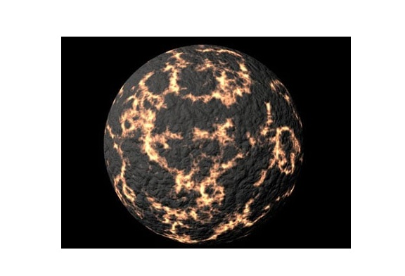
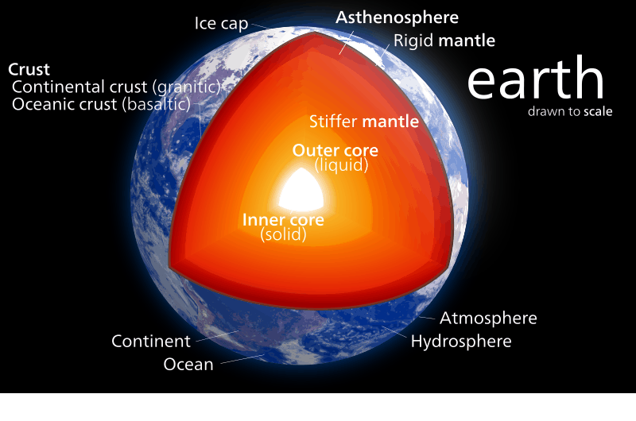
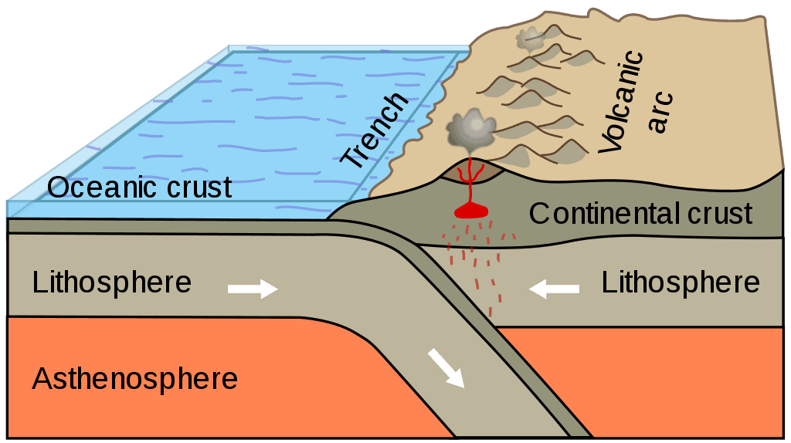
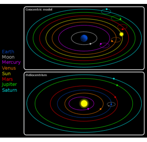
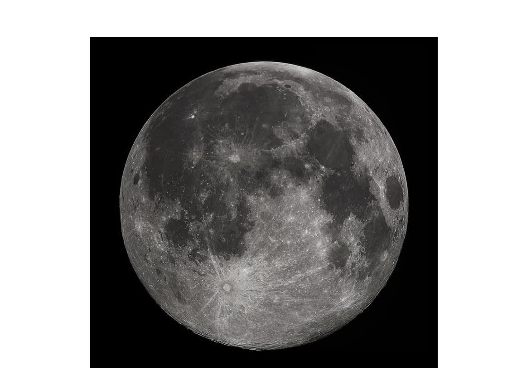

Earth
Earth is the third planet from the Sun and the fifth largest planet in the Solar System with the highest density. It is currently the only known location where life is present.
Formation
The Earth is believed to have formed around 4.5 billion years ago. The duration for this formation has been estimated to have lasted about 10 to 20 million years. The theory states that a solar nebula partitions a volume out of a molecular cloud by gravitational collapse which begins to spin and flatten into a circumstellar disk. The planets grow out of that disk through gravity pulling swirling dust and gas. Slowly, the Earth’s atmosphere and oceans were formed by volcanic activity and outgassing. It is believed that water vapor condensed into the oceans being augmented by water and ice from asteroids, protoplanets, and comets.
Distance, Size and Mass
Earth is the third planet from the Sun, at a distance of 1 AU or 147 million km / 91 million mi. It is situated in the goldilocks zone where temperatures are just right for liquid water to exist and for life to evolve. Depending upon their current orbital positions, either Venus or Mercury are the closest planets to Earth. It has an equatorial radius of 6.371 km / 3.958 mi, and a polar radius of 6.356 km / 3.949 mi, meaning it is not completely spherical but rather bulged at the equator due to rotation. The diameter of Earth is around 12.742 km / 7.917 mi being the fifth largest planet from the solar system, and the largest of the terrestrial planets (Venus, Mercury, Mars).

Structure
Earth has four major main layers: an inner core at the center, an outer core enveloping it, mantle, and crust. Since it has the greatest density out of all the planets in the solar system - 5.51 g/cm³ - and a gravity of 9.807 m/s² or 1 g the Earth’s core is solid. It is made of iron and nickel about 759 miles / 1.221 kilometers in radius. The temperatures at the core have been estimated to be around 9.800 degrees Fahrenheit / 5.400 degrees Celsius. This is hotter than the surface of the Sun. Together with the inner core, Earth also has an outer core, with the crust being the mantle and the thickest layer. It is a viscous mixture of molten rock about 1.800 mi / 2.900 km thick and has the consistency of caramel. The outermost layer – Earth’s crust – goes about 19 mi / 30 km deep on average on land. But at the bottom of the ocean, the crust is thinner and extends about 3 mi / 5 km from the seafloor to the top of the mantle. The crust in a sense floats on the mantle due to lower density.

It is not a solid piece but rather broken up into huge tectonic plates. These plates move, driven by the flow of rock in the mantle that is in turn powered by heat. The core heats the bottom of the mantle causing convection leading to the warmer material to rise. It takes about 50.000 to 60.000 years for a blob to move a single kilometer. Though the hot material rises towards the surface, it is blocked by the crust. The magmatic rock pushes on the plates, causing them to slide around slowly. Over millions of years, the surface geology of the Earth changed dramatically because of this. Where the crust is weaker magma can push its way through thus erupting onto the surface, forming volcanoes. Because of volcanoes, material wells out creating new land, and they also pump out gas that greatly contributed to Earth’s atmosphere.
 The interior of the Earth is very hot – comparable to the surface of the Sun. Most of the heat has remained since the Earth’s formation. As it gained mass it began to contract under its own gravity - the squeezing adding heat to the material. Elements like uranium also contribute to the Earth’s heat as the atoms radioactively decay.
Another source for the heat: dense materials such as iron and nickel that sunk to the center, warming up due to friction.
As such the core is so hot because of:
(1) Leftover heat since the Earth’s formation
(2) Gravity’s squeezing effect
(3) Radioactive decay from elements such as uranium
(4) Friction
Rotation
The Earth makes a complete rotation on its axis once every 23.9 hours. It takes Earth 265,25 days to complete one trip around the Sun – year. In order for calendars to maintain their consistency with this orbit, every 4 years one day is added – this is called a leap day – as well as a leap year. Earth's orbital speed averages 29.78 km/s (107,208 km/h; 66,616 mph), which is fast enough to cover the planet's diameter in 7 minutes and the distance to the Moon in 4 hours.
Satellites
Earth has one natural satellite the Moon, and several other artificial satellites such as asteroids or large rocks trapped by Earth’s gravity. They are trapped only temporarily for months or even years before returning to an orbit around the Sun. It is believed that the Moon was formed after a collision billions of years ago. A large chunk of rock smashed into Earth and displaced a portion of Earth’s interior. The resulting chunks clumped together and formed our Moon. This is at least the most widespread theory, researching continues.
